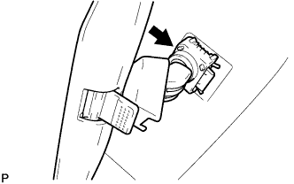
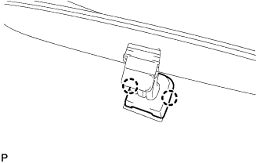

ВНУТРЕННЕЕ ЗЕРКАЛО ЗАДНЕГО ВИДА > УСТАНОВКА |
| 1. УСТАНОВИТЕ ВНУТРЕННЕЕ ЗЕРКАЛО ЗАДНЕГО ВИДА В СБОРЕ (для моделей с зеркалом с электрохромным покрытием) |
С помощью торцевого ключа "torx" T20 закрепите внутреннее зеркало заднего вида винтом.
Подсоедините разъем.
| 2. УСТАНОВИТЕ КРЫШКУ ДЕРЖАТЕЛЯ СТОЙКИ ВНУТРЕННЕГО ЗЕРКАЛА ЗАДНЕГО ВИДА (для моделей с зеркалом с электрохромным покрытием) |
 |
Введите в зацепление 2 захвата.
 |
Закрепив 2 захвата, как показано на рисунке, установите крышку держателя стойки внутреннего зеркала заднего вида.
| 3. УСТАНОВИТЕ ВНУТРЕННЕЕ ЗЕРКАЛО ЗАДНЕГО ВИДА В СБОРЕ (для моделей без зеркала с электрохромным покрытием) |
|  |
Надвиньте и установите внутреннее зеркало заднего вида, как показано на рисунке.
|  |
Введите в зацепление 2 захвата, чтобы установить крышку.